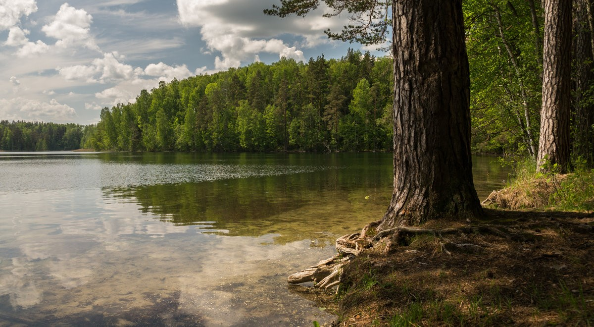
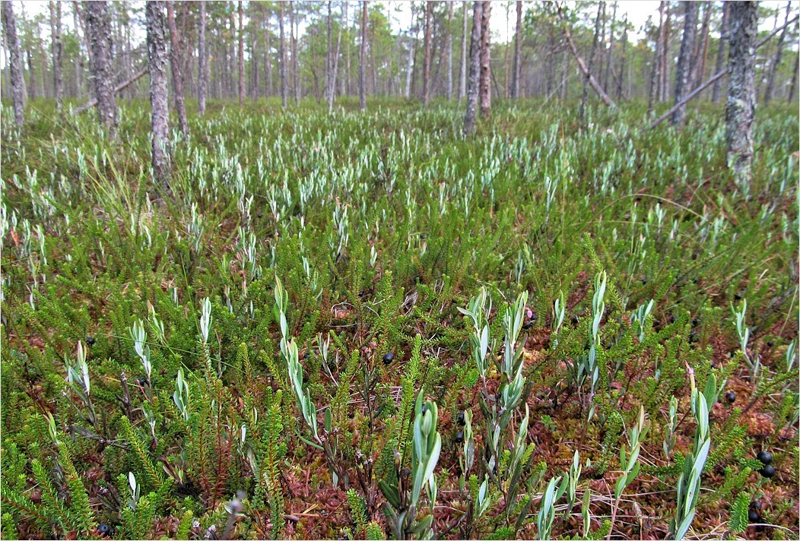
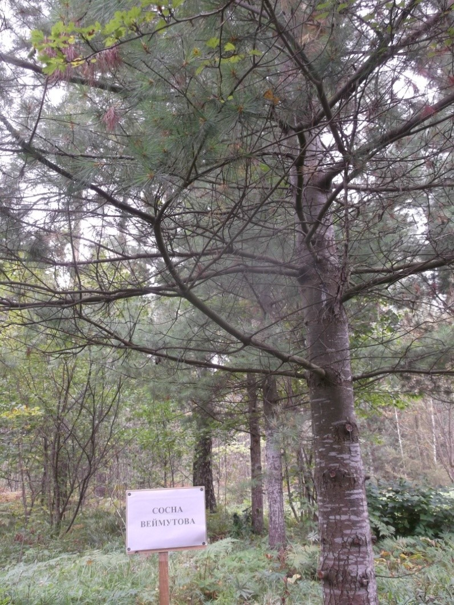

Жарковский
Природа
1.Озеро Щучье

Самое большое озеро в районе, площадь которого свыше 10 кв. км., длина – 14 км, ширина – до 2 км, глубина до 12 м. Западная часть озера является частью государственного заповедника «Смоленское поозерье».
2.Озеро Чистик

Жемчужиной района является озеро Чистик с его уникальным месторасположением и необыкновенно чистой и прозрачной водой. Всего на территории района насчитывается более двух десятков больших и малых озер, и столько же речек, которые в основном впадают в Межу.
3.Болото Пелецкое (Жарковское)



Второе по площади болото области – Жарковское, площадью 38 тыс. га.
4.Сосна Веймутова (90 Лет)


Находится в деревне Горбочево (фотографии горбачевской сосны нет, это просто изображение этой сосны). Распространена в Америке и Канаде.